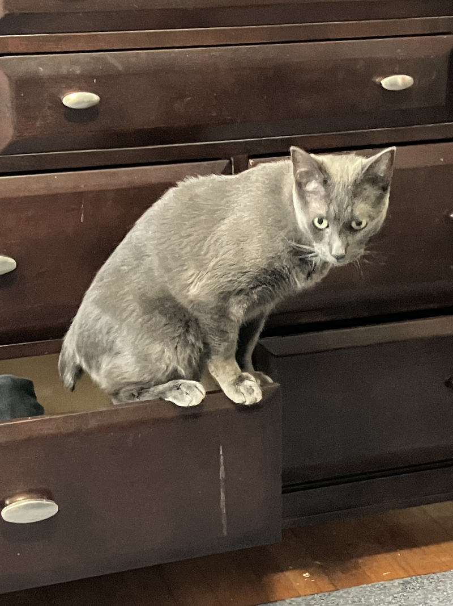
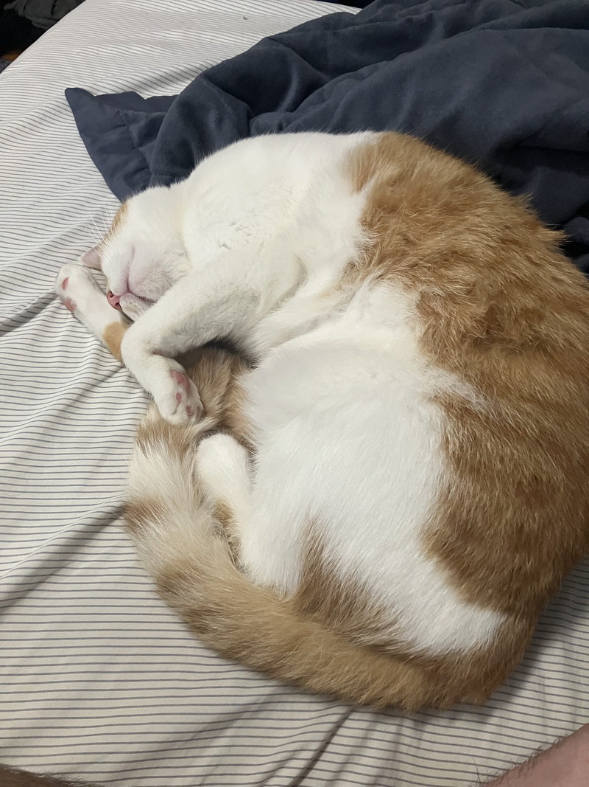
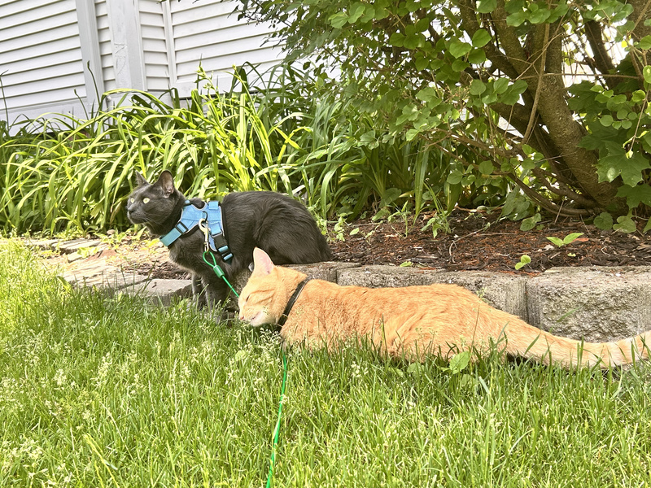
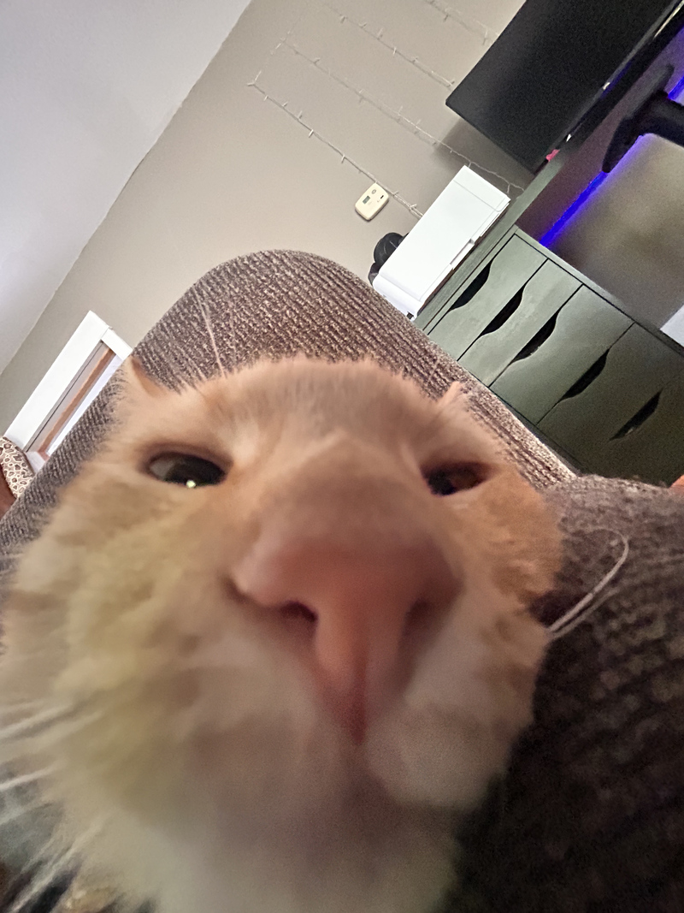
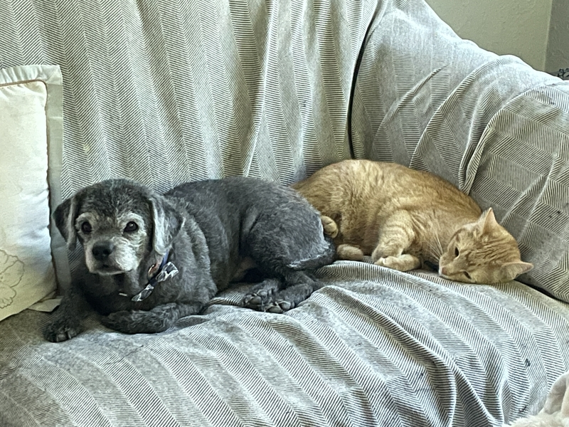

Here are a few photos of my pets! I personally have a dog and a cat. My dog is named Charlie and he has curly, grey hair. My cat is named Nemo and he is orange. My brother and his fiance live with me and they have their own cat who is grey and named Rat. I also included a picture of my other brother's cat from when I was cat sitting for him. His cat is named Moby and he is white and orange.
I got the image for the favicon for this site from Pixabay, uploaded by user gdakaska.




